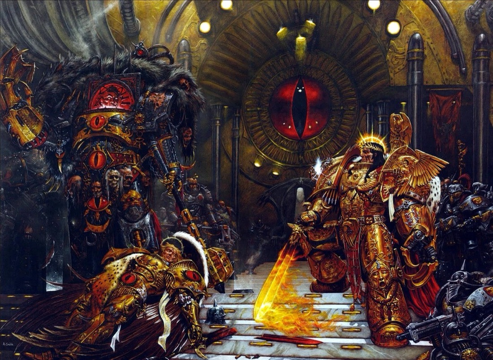

Sanguinius
| Sanguinius Primarch of the IX Legion | |
|---|---|
 Sanguinius in the golden armour of the Great Crusade, after the Signus campaign | |
| Title(s) | The Great Angel; the Angel of Baal; Emperor of Imperium Secundus (proclaimed); Imperial saint |
| Allegiance | Imperium of Mankind (loyalist) |
| Legion | IX, the Blood Angels |
| Homeworld | Baal Secundus, Segmentum Solar |
| Life | |
| Created | c. 792.M30, Terra |
| Discovered | 843.M30, by the Emperor of Mankind |
| Died | 014.M31, aboard the Vengeful Spirit, orbit of Terra |
| Cause | Slain by Horus |
| Relatives |
|
| Wargear | Armour of Sanguinius; Blade Encarmine; Spear of Telesto; his wings |
| Known for | The Signus campaign; the defence of the Eternity Wall; his death at the hands of Horus; the Flaw |
Sanguinius, called the Great Angel and the Angel of Baal, was the primarch of the IX Legion, the Blood Angels. He was the ninth of the Emperor's twenty primarchs and, in the opinion of most Imperial scholars, the noblest of them in character and appearance. He had great white wings, the only winged primarch, and a gift of foresight that revealed to him many parts of his own death. He grew to manhood among the tribes of Baal Secundus, a moon of the desert world of Baal, and was found by the Emperor of Mankind in 843.M30.[1]
In the Great Crusade Sanguinius was among the closest of the Emperor's sons, and served as his honour guard on many occasions. His Legion became the most chivalrous and the most savage of the Legions, famed for its shock tactics and its beauty. He had a deep friendship with Horus, which made the Warmaster's later betrayal all the more bitter. During the Horus Heresy, Sanguinius was a founder of the stopgap realm of Imperium Secundus, beyond the Ruinstorm, and was proclaimed by his brothers as its emperor. He fought through the Ruinstorm to Terra, and held the Eternity Wall of the Imperial Palace against the Traitors.[2]
He died in 014.M31 at the climax of the Siege of Terra, aboard the Warmaster's flagship, killed by Horus as the Emperor arrived. His death plunged the Blood Angels into the first outbreak of the Black Rage, a curse that afflicts the Legion and its Chapters to this day. The Imperial Cult honours him as a saint, and the Blood Angels as their father and their lost lord.[2][3]
Early life
[edit]Baal Secundus
[edit]The capsule that held the infant Sanguinius fell on Baal Secundus, at a place the Blood Angels call Angel's Fall. The planet is poisoned and its tribes wage constant war against mutants. A wandering tribe who called themselves the Folk of Pure Blood found him and took him in. Reportedly the infant was nearly killed at first, since his wings frightened them, but the chief of the tribe declared him a messenger, and he was raised.[1]
He grew with the unnatural speed of a primarch. At three weeks he was the size of a child of three years and could walk, and in the legends of his tribe he killed a giant fire-scorpion with his hands at that age. By his first year he had mastered the speech and fighting craft of his tribe. A band of feral mutants surprised his tribe when he was a boy, and he killed them all alone, though they numbered more than a hundred. His tribe saw the primarch's anger for the first time: the full powers of a primarch came upon him, and a nimbus of light played about his head. By leading the tribes, he drove back the mutants, and made it possible for civilisation to begin again on Baal Secundus. The parables and psalms of the Blood, which the Blood Angels' Librarians have since transcribed, are held in the Legion's sacred archives.[1]
The Emperor
[edit]In 843.M30 the Emperor arrived at the Conclave of the Blood, a great natural amphitheatre carved into the mountain, and the primarch recognised him at once. Unlike some of his brothers, he did not challenge the Emperor. Many credit this to his foresight. Sanguinius agreed to lead the Blood Angels, the Legion made from his gene-seed, and the best of his tribesmen were raised to be Astartes. Others remained on Baal Secundus to defend it, and the Imperial Truth was taught to them. The Emperor was reportedly moved by the primarch's presence, and the two were close for the rest of the Great Crusade.[1]

The Great Crusade
[edit]Sanguinius fought by the Emperor's side in many campaigns, and the Blood Angels served as his honour guard. The Legion won a name as shock troops, which fed a rivalry with the assault-minded World Eaters. The Legion's loyalty to its primarch was absolute, and its Space Marines tried, in dress and manner, to be worthy of him. He grew closest of all to Horus, Leman Russ and Jaghatai Khan, and the Blood Angels were close to the Luna Wolves, the Space Wolves and the White Scars.[1]
At the end of the Ullanor Crusade, in which the Emperor's forces destroyed the Ork empire of Urrlak Urruk, Sanguinius saw Horus elevated to Warmaster. He took no offence, and Imperial chroniclers record that Horus sensed in his brother a purity of spirit that he could never match.[4]
The Flaw
[edit]Sanguinius carried a secret. His gene-seed had a defect, a flaw that grew in strength, and the Blood Angels, who share it, inherited a hunger for blood called the Red Thirst. He knew of it for years, hid it from the Emperor and his brothers, and shared it only with a few trusted officers, among them the First Captain Azkaellon and the Legion's Master Apothecary. Horus discovered it, and promised never to speak of it.[2]
In the later years Horus used that knowledge against his brother. He sent the Blood Angels to cleanse the Signus Cluster of xenos and its slave-masters, knowing that they would meet the powers of Chaos. The Blood Angels arrived to find their fleet attacked by the Warp and the daemon Kyriss, a lord of Slaanesh, in command of Signus Prime. In the fighting that followed, Sanguinius duelled the Bloodthirster Ka'Bandha, who revealed Horus' treachery. The daemon crushed him with its whip and axe and left him alive. When the Blood Angels learned that their primarch had fallen, a first Black Rage consumed them, and they cleansed the planet in blood. Kyriss was banished by the Blood Angels, and the planet freed.[2]
The Horus Heresy
[edit]Imperium Secundus
[edit]The Blood Angels were cut from Terra by the Ruinstorm. They were drawn to Ultramar by a strange alien beacon on the world of Sotha, as were the Dark Angels. There Sanguinius, Roboute Guilliman and Lion El'Jonson founded Imperium Secundus, a realm meant to continue the Emperor's work. Guilliman proclaimed Sanguinius as the heir to the Emperor, and the Lion was made Lord Protector.[2]
When the Lion captured Konrad Curze, the three brothers held a trial. Curze argued that he was acting in his nature, and his accusations divided Guilliman and the Lion. Sanguinius dismissed the Lion from Imperium Secundus, but the Lion returned, and persuaded Sanguinius not to execute the Night Haunter, on the grounds that his prophecy of death at the hands of the Emperor's assassin proved that the Emperor lived. Sanguinius, who had foreseen his own death, recognised the truth of it.[2]
The road to Terra
[edit]Sanguinius received a vision and learned that he had to go to Davin, the world where Horus had first fallen. At the Second Battle of Davin he took Curze aboard his flagship, hoping to use his prophetic power, and descended to the surface, where he was trapped in a portal to the Warp and fought the daemon Madail. Guilliman and the Lion fought through the Serpent Lodge to reach him. When he escaped, the world was destroyed, and a breach opened in the Ruinstorm. The Blood Angels fleet raced directly for Terra while the Ultramarines and the Dark Angels fought a diversion.[2]
The Siege of Terra
[edit]The Blood Angels came to Terra in the first days of the siege and took the Eternity Wall, the great rampart of the Imperial Palace. Sanguinius, by the Imperial records of the siege, took on the defence of the Eternity Gate, with his Legion and the Adeptus Custodes. The Traitor Legions assailed the walls many times, and three times, in the account preserved by the Blood Angels, they were thrown back. Alone among the primarchs, Sanguinius had foreseen the siege and his place in it, and he refused to leave the wall.[5][2]
The defenders were close to collapse when the Bloodthirster Ka'Bandha, who had spared Sanguinius on Signus, returned and challenged him in the name of Khorne. The two fought in the air above the wall, and the daemon cast the Angel down in a crash that shook the Palace. Sanguinius rose, took the daemon by the ankle and arm and killed it. The Blood Angels' account holds that he was by then weary and wounded, and that the fight cost him most of his strength.[5]
The assault reached its peak when Horus lowered the shields of the Vengeful Spirit. The Emperor teleported aboard with his bodyguard, with Sanguinius and with Rogal Dorn, leading a company of Imperial Fists. Sanguinius reached Horus first. The Warmaster, who had been his close friend, tried to turn him one last time, and Sanguinius refused. Horus attacked. The Angel, worn by the day's fighting and the daemon duel, was no match for the Warmaster at the height of his power, and Horus killed him.[2][5]

The Emperor entered the throne room to find the Angel's body at Horus' feet and, in rage and grief, killed Horus. Dorn, who had been the farthest of the boarding party from the throne room, arrived too late to take part, and found the bodies of the Emperor, Sanguinius and Horus on the bridge.[5][a]
The Legion and the brothers
[edit]The Blood Angels under Sanguinius
[edit]The IX Legion was raised from the best warriors of Baal Secundus and the neighbouring world of Baal, whose people kept the traditions of the primarch's tribes. Under Sanguinius it was known for its assault doctrine: fast, close and bloody, preferring the decisive strike to the long siege. Its warriors were gold and crimson, wore the primarch's emblem of a blood drop framed by wings, and were famed for a code of honour that other Legions described as chivalry. The primarch's personal guard, the Sanguinary Guard, was drawn from the Legion's finest and wore golden armour with feathered wings. It was led, in the Heresy, by First Captain Azkaellon.[1][2]
After the Second Founding the Legion was divided into Chapters, the Sanguinary Brotherhood, which includes the Blood Angels themselves and Successor Chapters such as the Flesh Tearers, the Angels Vermillion, the Angels Encarmine and the Lamenters. All of them inherit the Flaw. The Codex Astartes treats their condition with caution, and the Blood Angels' Chapter has several times been the object of Inquisitorial scrutiny.[6]
Brothers and friends
[edit]Sanguinius was loved by most of his brothers. His closest friend was Horus, whom he followed through many campaigns, and whom he told of the Flaw before any other primarch. The two Legions were close, and the Luna Wolves fought beside the Blood Angels at Ullanor. He was close to Leman Russ and to the Khan, and he respected Rogal Dorn, with whom he later defended the Palace. His relations with the Lion were cooler: the Lion thought little of the Angel's chivalry, and found his moods hard to understand. With Guilliman he was on good terms, and the Ultramarines' primarch was the first to propose him as the heir of Imperium Secundus.[1][2]
Horus' betrayal, therefore, struck him personally. The Warmaster had promised to guard the secret of the Flaw, and used it against him instead; the Blood Angels' tradition holds that Sanguinius did not hate his brother even at the last.[2]
Aftermath
[edit]The death of Sanguinius left a wound in the Blood Angels that never healed. At the moment of his death, the Legion was overtaken by the Black Rage, a berserk madness that sent them into a frenzy against the Traitors, and that has recurred among the Blood Angels and their Chapters in each generation since. With the Red Thirst, the Rage is the curse of the Blood Angels, and the reason for the Chapter's long distrust of the Imperium's psychic and genetic orthodoxy. The Blood Angels' Chapters have been compelled to live with it by the Codex.[2][6]
Dorn carried the Emperor to the Golden Throne, and the Blood Angels and their Successor Chapters, in the centuries that followed, made the Angel's memory the centre of their cult.[3]
Sainthood and legacy
[edit]The Ecclesiarchy recognises Sanguinius as an Imperial saint, in the first rank of the Emperor's sons, and his name is invoked in the liturgies of many Imperial cults. His winged form is among the most common images in the cathedrals of Terra. The Blood Angels, who regard him as a father, a lord and a martyr, revere him far above other saints. Their Successor Chapters, the Sanguinary Brotherhood, hold the Angel's memory at the centre of their rites.[3]
In the Era Indomitus, the Blood Angels were relieved on Baal by the Indomitus Crusade, and the Chapter Master Dante has fought alongside the Lord Commander. His line is still affected by the Flaw: the thirst grows with every generation, and the Black Rage has driven many of the Chapter's finest to ruin. Some savants fear that the Chapter's long decline will end in the Rage consuming it whole.[7]
Foresight
[edit]Sanguinius could glimpse the future. His visions, said to have increased in the last years of the Heresy, showed him many events, including the manner of his death and his father's role in it. The Blood Angels hold that he saw the Siege of Terra long before it began, and knew that he would die in the fight. Imperial records note that he never spoke of it to anyone beyond a few trusted brothers.[2]
Character and abilities
[edit]Sanguinius was, in the words of the Imperial chroniclers, "the noblest of the primarchs in physical aspect": tall, with feathered wings and golden hair, whose presence banished doubt. He was gracious, brave and compassionate, a dedicated servant of the Emperor, and a believer in the aim of the crusade, which was a united humanity, not mere conquest. He could also be savage, since the anger of Baal burned in him. His brothers called him the Angel, and those who first saw him often treated him with devotion.[1]
As a warrior he was among the greatest, and as a leader he was one of the most beloved. His strategic gifts were less than those of Guilliman, but he drew on his speed, his wings and the loyalty of his Legion to make assaults that few could match. His powers of foresight, though never clear, guided many of his decisions.[2]
Wargear
[edit]- Armour of Sanguinius: a suit of golden artificer armour, wrought with a gem in the shape of a heart on the breast. It bore the heraldry of the Legion's worlds in four ruby discs.[1]
- Blade Encarmine: a power sword with a blade of deep crimson, borne by the primarch in many battles.[1]
- Spear of Telesto: a primarch-sized spear, with an integral bolter, that Sanguinius carried in the Heresy.[1]
- Wings: a pair of large feathered wings, which allowed him to fly in short bursts.
See also
[edit]Notes
[edit]- ^ An earlier Imperial account, still told by the Blood Angels, holds that Sanguinius cut a small hole in the Warmaster's armour before he died, and that this hole allowed the Emperor's final blow to pierce Horus. The newest accounts of the siege, from the Custodes archives, do not confirm the story, and Imperial scholars treat it as a Blood Angels tradition.
References
[edit]- ^ a b c d e f g h i j k Liber Primarchus (M32, revised M41). Administratum Archive, Terra.
- ^ a b c d e f g h i j k l m n o Chronicles of the Heresy (sealed). Logos Historica Verita, Terra.
- ^ a b c Liber Ecclesiasticus (M37). Adeptus Ministorum.
- ^ Oliton, Mersadie (c. 005.M31). Chronicles of the Luna Wolves. Remembrancer Order.
- ^ a b c d Records of the Siege of Terra (sealed). Adeptus Custodes Archive, Terra.
- ^ a b Guilliman, Roboute (c. 019.M31). Codex Astartes. Macragge.
- ^ Records of the Indomitus Crusade (ongoing). Office of the Lord Commander.
Further reading
[edit]- Liber Primarchus (M32, revised M41). Administratum Archive, Terra.
- Records of the Siege of Terra (sealed). Adeptus Custodes Archive, Terra. The Custodes' account of the final days.
- Liber Ecclesiasticus (M37). Adeptus Ministorum. The Ecclesiarchy's veneration of the Angel.